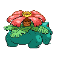
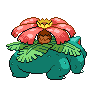
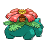
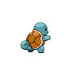
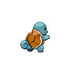
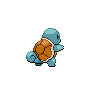
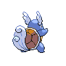
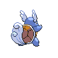
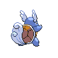

#0001 Bulbasaur
Health Points: 45 HPHeight: 70 cmWeight: 69 kgType:
grass
poison
Details: A strange seed was
planted on its
back at birth.
The plant sprouts
and grows with
this POKéMON.Full view:.png)
.png)

#0002 Ivysaur
Health Points: 60 HPHeight: 100 cmWeight: 130 kgType:
grass
poison
Details: When the bulb on
its back grows
large, it appears
to lose the
ability to stand
on its hind legs.Full view:.png)
.png)

#0003 Venusaur
Health Points: 80 HPHeight: 200 cmWeight: 1000 kgType:
grass
poison
Details: The plant blooms
when it is
absorbing solar
energy. It stays
on the move to
seek sunlight.Full view:.png) 


#0004 Charmander
Health Points: 39 HPHeight: 60 cmWeight: 85 kgType:
fire
Details: Obviously prefers
hot places. When
it rains, steam
is said to spout
from the tip of
its tail.Full view:.png)
.png)

#0005 Charmeleon
Health Points: 58 HPHeight: 110 cmWeight: 190 kgType:
fire
Details: When it swings
its burning tail,
it elevates the
temperature to
unbearably high
levels.Full view:.png)
.png)

#0006 Charizard
Health Points: 78 HPHeight: 170 cmWeight: 905 kgType:
fire
Details: Spits fire that
is hot enough to
melt boulders.
Known to cause
forest fires
unintentionally.Full view:.png)
.png)

#0007 Squirtle
Health Points: 44 HPHeight: 50 cmWeight: 90 kgType:
water
Details: After birth, its
back swells and
hardens into a
shell. Powerfully
sprays foam from
its mouth.Full view:.png) 


#0008 Wartortle
Health Points: 59 HPHeight: 100 cmWeight: 225 kgType:
water
Details: Often hides in
water to stalk
unwary prey. For
swimming fast, it
moves its ears to
maintain balance.Full view:.png) 


#0009 Blastoise
Health Points: 79 HPHeight: 160 cmWeight: 855 kgType:
water
Details: A brutal POKéMON
with pressurized
water jets on its
shell. They are
used for high
speed tackles.Full view:.png)
.png)

#0010 Caterpie
Health Points: 45 HPHeight: 30 cmWeight: 29 kgType:
bug
Details: Its short feet are tipped with suction
pads that enable it to tirelessly climb
slopes and walls.Full view:.png)
.png)

#0011 Metapod
Health Points: 50 HPHeight: 70 cmWeight: 99 kgType:
bug
Details: This POKéMON is
vulnerable to
attack while its
shell is soft,
exposing its weak
and tender body.Full view:.png)
.png)

#0012 Butterfree
Health Points: 60 HPHeight: 110 cmWeight: 320 kgType:
bug
Details: In battle, it
flaps its wings
at high speed to
release highly
toxic dust into
the air.Full view:.png)
.png)

#0013 Weedle
Health Points: 40 HPHeight: 30 cmWeight: 32 kgType:
bug
poison
Details: Often found in
forests, eating
leaves.
It has a sharp
venomous stinger
on its head.Full view:.png)
.png)

#0014 Kakuna
Health Points: 45 HPHeight: 60 cmWeight: 100 kgType:
bug
poison
Details: Almost incapable
of moving, this
POKéMON can only
harden its shell
to protect itself
from predators.Full view:.png)
.png)

#0015 Beedrill
Health Points: 65 HPHeight: 100 cmWeight: 295 kgType:
bug
poison
Details: It has three poisonous stingers on its forelegs and
its tail. They are used to jab its enemy repeatedly.Full view:.png)
.png)

#0016 Pidgey
Health Points: 40 HPHeight: 30 cmWeight: 18 kgType:
normal
Details: A common sight in
forests and woods.
It flaps its
wings at ground
level to kick up
blinding sand.Full view:.png)
.png)

#0017 Pidgeotto
Health Points: 63 HPHeight: 110 cmWeight: 300 kgType:
normal
Details: Very protective
of its sprawling
territorial area,
this POKéMON will
fiercely peck at
any intruder.Full view:.png)
.png)

#0018 Pidgeot
Health Points: 83 HPHeight: 150 cmWeight: 395 kgType:
normal
Details: When hunting, it
skims the surface
of water at high
speed to pick off
unwary prey such
as MAGIKARP.Full view:.png)
.png)

#0019 Rattata
Health Points: 30 HPHeight: 30 cmWeight: 35 kgType:
normal
Details: Bites anything
when it attacks.
Small and very
quick, it is a
common sight in
many places.Full view:.png)
.png)

#0020 Raticate
Health Points: 55 HPHeight: 70 cmWeight: 185 kgType:
normal
Details: It uses its whis
kers to maintain
its balance.
It apparently
slows down if
they are cut off.Full view:.png)
.png)